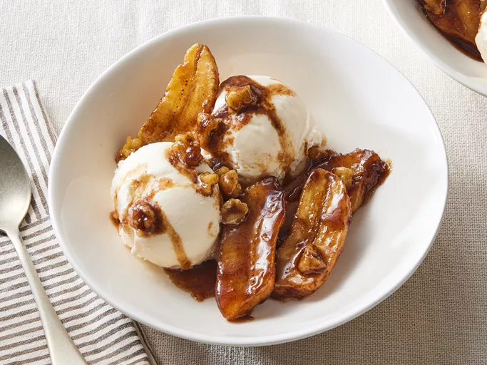

Banana Foster
Back to Homepage

Bananas Foster is made from bananas and vanilla ice cream with sauce that consists
of butter, brown sugar, cinnamon, and rum(an alchoholic drink). Orginating from
a restaurant in New Orleans 1951, it is usually prepared and served as a dessert
where alcohol is added and ignited.
Ingredients
- Butter
- Brown sugar
- Rum
- Vanilla extracts
- Cinnamon
- Bananas
- Nuts
- Ice cream
Steps
- Gather all ingredients.
- Melt butter in a large, deep skillet in medium heat.
- Put in and stir brown sugar, rum, vanilla and cinnamon; bring to a low boil
- Place bananas and walnuts in the pan. Cook until softened, 1 to 2 minutes.
- Serve at once over vanilla ice cream. Done!